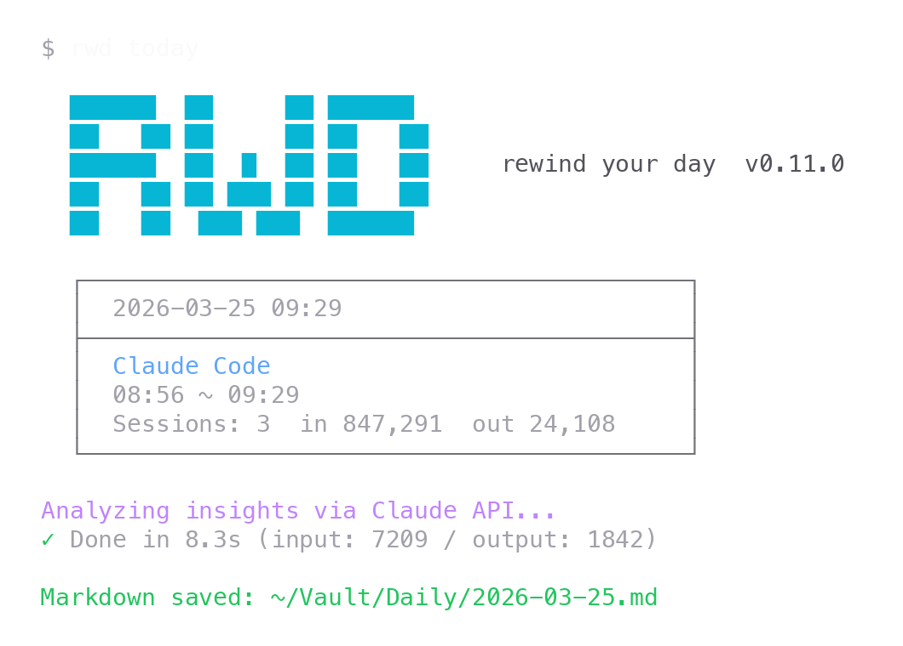

Capture every session automatically
rwd scans your AI agent sessions across projects and turns a day into one structured note. No copy-paste.
Claude Code and Codex today. More agents on the way.
Decisions. Questions. Corrections. Everything you worked out with your AI agents today, stitched into one daily note.

rwd scans your AI agent sessions across projects and turns a day into one structured note. No copy-paste.
Claude Code and Codex today. More agents on the way.
Each note keeps what you decided, what you wondered, what you corrected. The reasoning trail AI agents strip out.
Sensitive values are masked locally before anything touches an LLM. API keys, tokens, private IPs stay yours.
rwd summary gives you a progress report. rwd slack gives you a team-ready post. Copy-to-clipboard, done.
I code with Claude every day. The code ends up in git. My decisions, my corrections, the questions I was working through don't. I wanted to keep them, so I wrote rwd.
Jinwoo
curl -fsSL https://raw.githubusercontent.com/gigagookbob/rwd/main/install.sh |
sh
Native Windows is not supported. Use WSL2.
rwd supports Claude Code and Codex.
Output is saved as Markdown to any directory you choose. Obsidian is optional.
Yes. Use --lang en or --lang ko on today, summary, and slack commands.
rwd is MIT licensed and open source. You need your own API key for the configured provider.
Native Windows is not supported. Please use WSL2. Install WSL2, open a Linux
shell (for example Ubuntu), then run
curl -fsSL https://raw.githubusercontent.com/gigagookbob/rwd/main/install.sh |
sh.
Yes. Logs are processed locally, and sensitive values like API keys, bearer tokens, and private IPs are masked before LLM analysis.